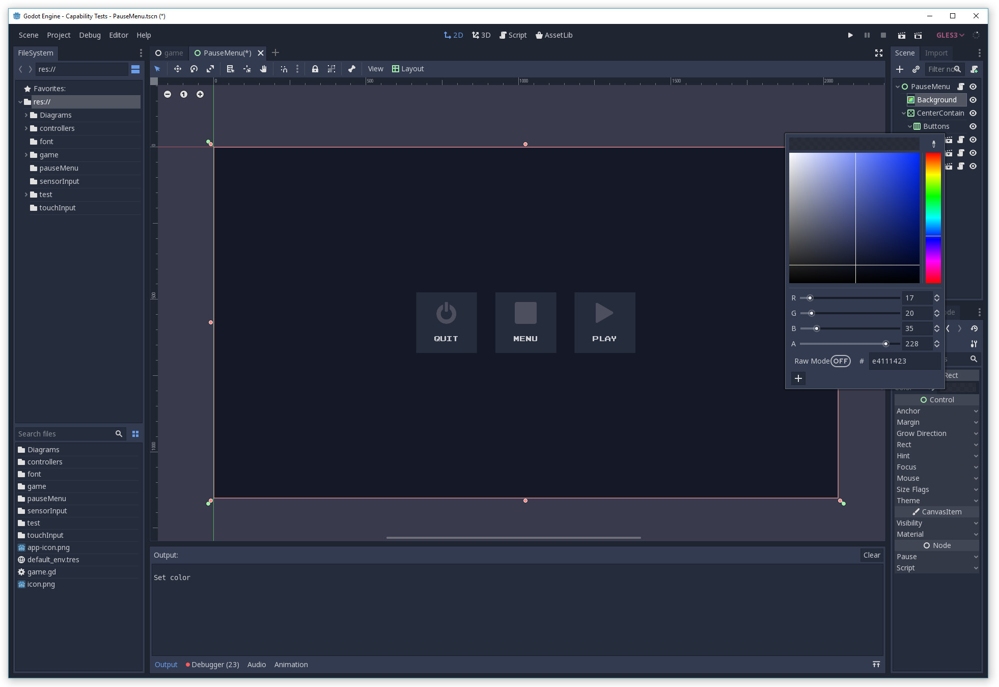
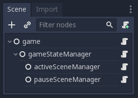
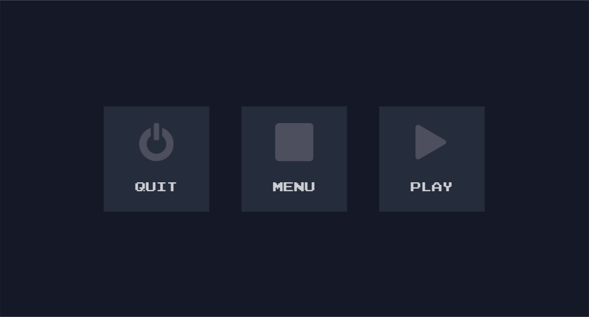

Building a Pause Menu - Part 1
I built a pause menu to improve the experience on my Android phone.
Background
After constructing a home menu for my Capability Test App (see my last post) I thought I was done with menus for a while. However the experience of closing and re-opening the app just to change tests quickly became tedious. I wanted to address this pain before adding more.
The time was right to build a Pause Menu providing in-app navigation. This also allowed me to explore how Godot handles game pausing (a feature I’ll use in the future). It was an opportunity to kill two birds with one stone.
The Godot Pause Mechanism
The Godot engine has a simple mechanism for pausing a game. Flipping the get_tree().paused boolean to true at run-time sends your game into pause mode. In pause mode your input handlers and process loop code are no longer called by default, stopping your game from running. Then you configure the nodes you want to continue processing during pause mode. In my case this meant configuring a Pause Menu scene that contains controls to unpause the game, go back home (i.e. to the Main Menu), and to quit the app.
You can add whatever features you want to run while the game is paused. It’s a very simple and effective system.

Evolving the Solution Architecture
It may be easy to build a Pause Menu UI and hook up to Godot’s pause mechanism, but to perform the navigation back to the Main Menu I needed to evolve my architecture. Previously the only navigation in the app was launching a new scene when selected from the Main Menu. At the time it was appropriate for the Main Scene script to handle instancing and launching of the selected test scene.
With the introduction of a Pause Menu, navigation back to the Main Menu was now required. This meant rethinking how scene creation, activation, and navigation was handled throughout the app.
To prevent the navigation code spreading throughout the codebase as the app grew, I decided to replace existing navigation code with a centralised service. After considering various ways to achieve this I created a gameStateManager node to be this service. This node would be responsible for scene navigation via a SetActiveScene() function. It would also track the state of the app (GamePaused or PlayingScene) and expose a command system to allow navigation to the various fixed game scenes and states (PauseGame, GoHome, QuitApp, ContinueGame).
After a first pass at writing the gameStateManager I found my code was too messy. I took this code smell to indicate my gameStateManager was doing too much and needed breaking apart. I created two child nodes; an activeSceneManager responsible for changing the active scene, and a pauseSceneManager responsible for managing the Pause Menu and its operations. The gameStateManager remained the central point for processing game commands and tracking the game state.
This breakdown keeps each node focused on a single area of responsibility (the ‘S’ in SOLID design principles).

Using Signals as a Messaging System
There are two types of messages my navigation system needs to work. First I have game scenes that need to change the active scene by messaging the activeSceneManager. Second I have a Pause Menu that needs to send game commands to the gameStateManager for processing.
All my game scenes (the Main Menu, Pause Menu, and capability test scenes) are created by the Manager nodes. This provides an opportunity to connect signals from game scenes to the Manager nodes at the point of creation. As long as these signals implement standard message contracts, a one-way message channel is formed from the game scene to the appropriate Manager node along which messages can be passed.
The ‘SetActiveScene’ Message Channel (and Contract)
If a game scene (such as my Main Menu) has a requirement to navigate to a new scene, it must implement a signal I’ve called SetActiveScene(args) . The contract for args is a dictionary containing a key of either sceneInstance or scenePath, and an optional key sceneName. An existing node instance or path must be passed as the value. The sceneName value is only used for debug output.
The signal is connected to the SetActiveScene(args) function in the activeSceneManager. When a node instance or path is passed in the args, the activeSceneManager creates the new scene instance (or use the passed one), sets the new scene instance as the active one, and connects the SetActiveScene(args) signal of this new instance to itself. The new node is added as a child of the activeSceneManager itself. The previously active scene child node is removed (if there is one) and signal connections are disconnected.
Thus when the currently active scene needs to navigate to a new scene, it calls emit_signal on SetActiveScene with appropriately message args and the navigation is performed by the activeSceneManager.
1 | var _activeSceneInstance |
Managing the active scene and connecting the SetActiveScene signal in the activeSceneManager
The ‘ExecuteGameCommand’ Message Channel (and Contract)
The game command message channel is implemented differently. Currently in my Capability Test app the only node required to send game commands is the Pause Menu scene. Because the Pause Menu’s UI maps directly to game commands I can hardwire signal connections from the Pause Menu scene directly to the gameStateManager when it is created by the pauseSceneManager.
To do this I created MenuSelected(), QuitSelected() and PlaySelected() signals on the Pause Menu scene. These are emitted by the Pause Menu scene when the user selects the Menu, Quit or Play buttons on the Pause Menu.

These signals are connected to an ExecuteGameCommand(command) function on the gameStateManager by the pauseSceneManager as the game boots. In this case the message (the command parameter) is a simple enum value.
1 | enum gameCommand { PauseGame, GoHome, QuitApp, ContinueGame } |
When the pauseSceneManager creates the Pause Menu it connects its signals using a hardcoded message value.
1 | var _pauseSceneInstance |
Creating the game command message channel from pause menu to the gameStateManager
The ExecuteGameCommand(command) function on the gameStateManager simply checks which command was passed and performs the desired actions. It either updates the game state and shows/hides its manager node children, or quits the app.
1 | func ExecuteGameCommand(command): |
The gameStateManager being responsible for changing state and executing game commands
The Bootstrap
When the app first starts I need to do some preparation before the app is ready to be consumed by the user. The environment in which the app runs needs to be configured, and the initial game scenes and nodes required need to be created and instanced. When this preparation is done using code it is called a Bootstrap, and is an example of the Bootstrapping design pattern.
The code entry point of my app is the _ready() function in the the game scene script. This is where my bootstrap begins. Its first task is to configure the run-time environment for the app, which is performed using Godot engine properties and commands:
- The mouse pointer is hidden. My app is controlled purely with touch (even on Windows desktop)
- I configure Godot not to quit automatically. I will manage when the app closes using a Main Menu.
- I configure Godot not to quit when
Backis pressed. This setting is used when the game is running on Android.
1 | # Set up game environment |
The second task is to initialise the game scenes and nodes. Rather than hardcoding or hardwiring scenes with the editor, all my game scenes (the Main Menu, Pause Menu, and capability test scenes) are defined using data. When the app first starts I want the Main Menu to show and have the Pause Menu ready. I pass the paths of these scenes to the gameStateManager for creating, instancing, and adding to the game scene’s tree using a custom function called Initialise.
1 | $gameStateManager.Initialise("res://game/menu/Main.tscn", "res://pauseMenu/PauseMenu.tscn") |
The gameStateManager initialises its child Manager nodes activeSceneManager and pauseSceneManager by passing relevant scene paths using more custom Initialise functions. Once those complete the initial game state is set to gamestate.PlayingScene.
1 | func Initialise(homeScenePath, pauseScenePath): |
Initialise on activeSceneManager creates an instance of the Main Menu using the passed homeScenePath. It keeps a reference to this instance for later (navigation back to the Main Menu), and sets it as the active scene. This adds the Main Menu instance as a child of activeSceneManager (itself). Because activeSceneManager manages the app’s active scene, this is achieved using only local function calls (SetActiveScene() via Home()).
1 | var _homeSceneInstance; |
Initialise on pauseSceneManager creates an instance of the Pause Menu using the passed pauseScenePath. It creates an instance of the Pause Menu, wires up the ExecuteGameCommand message signals to the gameStateManager, hides the instance, and adds it as a child of pauseSceneManager (itself).
1 | func Initialise(pauseScenePath): |
Godot System Notifications
I configured Godot to ignore quit requests because I want to manage how the app closes myself. I want the Pause Menu to appear when the app window loses focus on desktop environments or the back button is pressed on Android. This is achieved by handling system notifications emitted by Godot.
Godot’s notification system uses event-like function calls to notify different parts of the engine when system events occur. Godot games and apps can also choose to be notified and respond to these events by implementing a _notification(what) function in any script(s). Each notification has a unique ID to identify what event occurred, and each ID is exposed as a constant in the MainLoop class to facilitate responding appropriately.
In my case I want the gameStateManager to show the Pause Menu when the app window loses focus (MainLoop.NOTIFICATION_WM_FOCUS_OUT) or the back button is pressed (MainLoop.NOTIFICATION_WM_GO_BACK_REQUEST). I also want the app to terminate when the app desktop window is closed or the Quit option is selected on the Pause Menu (MainLoop.NOTIFICATION_WM_QUIT_REQUEST). By implementing a _notification() function in the gameStateManager script I can use local function calls to ExecuteGameCommand() and pass the relevant gameCommand value to achieve the desired effect.
1 | func _notification(what): |
Now the game reacts appropriately to operating system events, shows the Pause Menu and terminates when I want it to…
except…
Godot Games Cannot Terminate Themselves on Android
On Android systems a call to get_tree().quit() doesn’t terminate the app. Android appears to be designed this way, as if all applications running on it are services that should always remain open. Currently it requires the user to force the application closed by using Android’s overview (square) button.
There seems to be valid ways to force close Android apps in Java, so I have created a feature request to allow Godot to support force closing in the future.
Moving Navigation from the Main Menu Script
With the Pause Menu hooked up all that remains is to remove the old navigation code used by the Main Menu to launch the various test scenes and replace them with the SetActiveScene message channel. As previously described this is a simple matter of implementing the SetActiveScene(args) signal in the Main Menu script and emitting it with correctly populated message arguments. The connection of the signal is done for the Main Menu scene during its creation by the activeSceneManager.
Within the Main Menu scene the buttons are connected to a single OnButtonPressed function in the script. When a button is pressed it passes the details of the test scene selected. Where OnButtonPressed used to create and instance the test scene when called, it now simply emits the SetActiveScene signal and constructs a message using the details passed in. The activeSceneManager does the heavy lifting and looks after the game state.
1 | func OnButtonPressed(scenePath, sceneName): |
Ready to Roll
Now everything is in place and we are ready to run the application. Here’s a video of the application running on Windows (a desktop scenario):
The Pause Menu on Windows Desktop
Here’s a video of the game running on Android phone.
The Pause Menu on Android Phone
Designing to Improve the Android Experience
Here’s a video showing the issue where Android doesn’t quit to highlight why it’s an issue.
Godot 3 can’t quit on Android!
Given I can’t force the app to close on Android at the moment, the only option I have is to employ clever design choices to counteract this woeful experience. I’ve reflected on this issue for some time. The best options I’ve come up with so far are to either change the button label from Quit to Close (or Minimise), and/or add another label to the Pause Menu explaining that you have to manually close down the app. I would only want these changes to appear when running on Android to avoid breaking the current design for other platforms. Further research is needed to discover how to achieve this, though I suspect adding an argument when exporting to Android will be the first thing to investigate.
In any case I’m not happy with either of these options from an aesthetic point of view. I like the symmetry of the current design with short four-letter words to describe intent. I also like the current icons that accurately describe what the intention of the button is by mimicking real-world hardware devices. Changing these to accommodate a functional shortfall on Android weakens the current design to the point at which I’m forced to consider a complete redesign for the Pause Menu.
I’m deferring that line of thinking for another time. The best outcome for me is that Godot will support force closing on Android in the future. Given I’m not writing a releasable game just yet (I’m still testing Godot’s capabilities) I can afford to wait to see what happens. Right now I have a menu that works for my current use case and I’ve implemented a nice navigation system that will stand up to future expansion of my app.
The code from this article is up on Github as a Gist.
See all the code on my Github Gist
I’ll be back in the new year with more posts about my adventures in Godot development. See you then!
Building a Pause Menu - Part 1
https://www.redperegrine.net/2018/12/30/building-a-pause-menu-part-1/